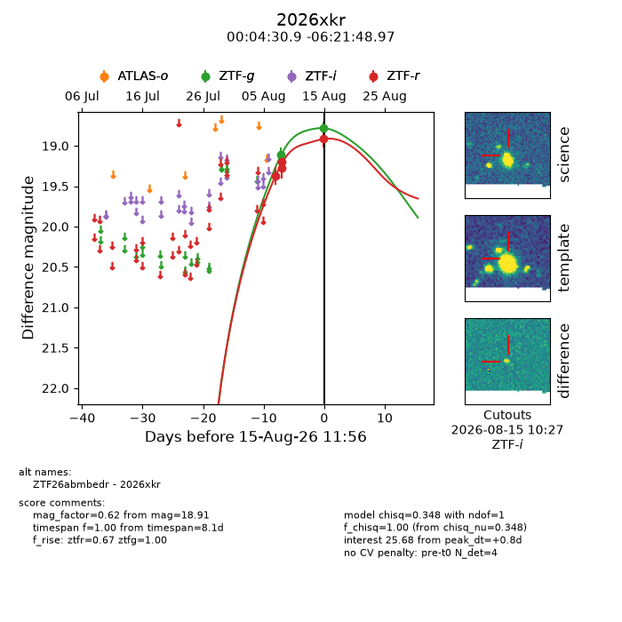
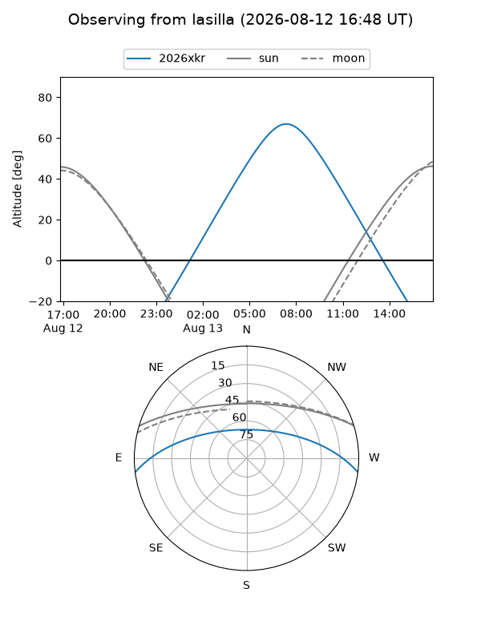
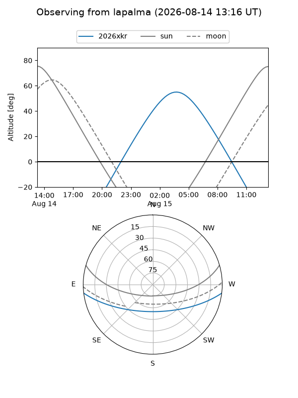
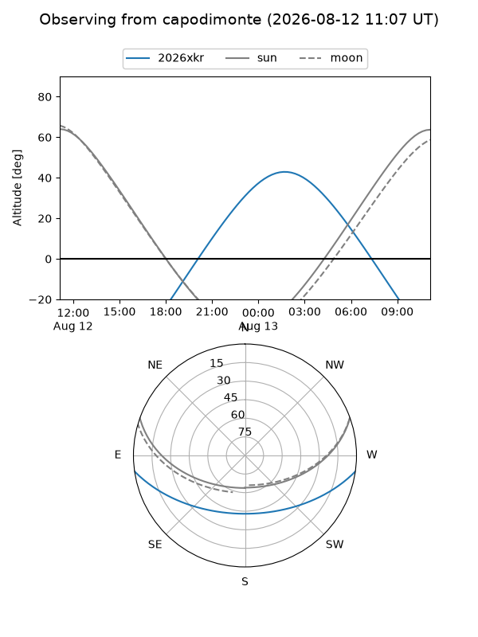
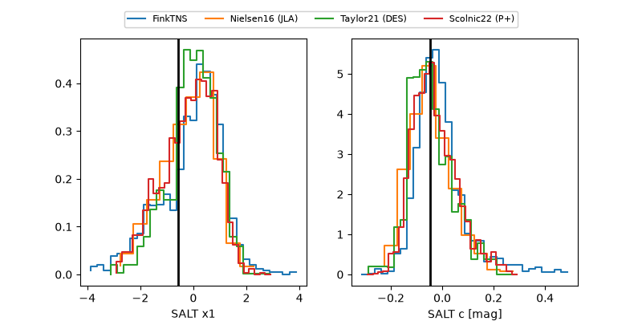

2026xkr
Target 2026xkr at 2026-08-15 11:59
Aliases and brokers:
FINK-ZTF: ztf.fink-portal.org/ZTF26abmbedr
Lasair-ZTF: lasair-ztf.lsst.ac.uk/objects/ZTF26abmbedr
ALeRCE-ZTF: alerce.online/object/ZTF26abmbedr
YSE-PZ: ziggy.ucolick.org/yse/transient_detail/2026xkr
TNS name: wis-tns.org/object/2026xkr
Direct TNS query: direct search
alt names
ZTF26abmbedr (ztf,fink_ztf)
2026xkr (tns,yse)
Coordinates:
equatorial (ra, dec) = 1.1287,-6.36360
equatorial (HMS+DMS) = 00:04:30.90,-06:21:48.97
galactic (l, b) = (92.5800,-66.42979)
Flags:
TNS type: nan
peak dt: +0.8
Photometry:
last ztfg=18.78, ztfr=18.91
2 ztfg, 4 ztfr detections
Lightcurve

Visibility



Additional plots
